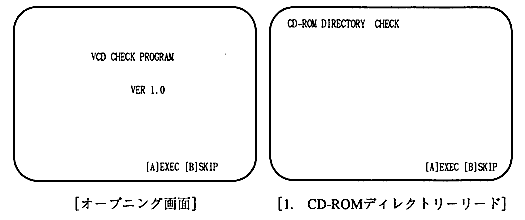
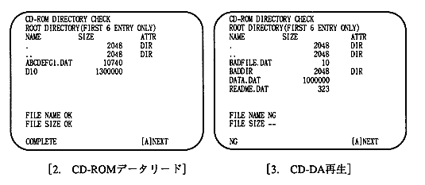

★PROGRAMMER'S GUIDE
★バーチャルCDシステム
★PROGRAMMER'S GUIDE
★バーチャルCDシステム
CDブロックからのコマンドを受け取り、その内容にしたがって定められた処理を行い、CDブロックへステータスを返します。
CDブロックからのコマンドのうち、PC互換機に対して必要なコマンドを抽出して送ります。これに対してPC互換機本体は必要に応じてデータを返します。
PC互換機にPLAYコマンドが送られると、PC互換機はCD-ROMデータやCD-DAデータ、あるいは必要に応じてR〜Wのサブコードデータを用意しますが、VCDI/Fボードはボード上のDMAコントローラによってこれらのデータを受け取ります。
3.で取り込んだデータにスクランブル処理を施し、シリアルデータフォーマットに変換して送出します。
(J3),(J4),(J5)の3つの機能設定は、お使いになるPC互換機ですでに設定されているものと重なりますと、バーチャルCDが立ち上がらなかったりPC互換機がハングアップするなどのトラブルの原因となります。
PC互換機のそれぞれの設定を把握のうえ、例えばSCSIボードのDMAチャネルと重なる時のように、どうしてもVCD I/Fボードの設定をデフォルトの状態から変更しなければならない時だけ、以下の設定変更を行います。この場合、さらに環境変数の値も変更する必要があります。なお、出荷時のデフォルト設定のままインストールする場合は、PC互換機立ち上げ後、特に環境変数の設定を行う必要はありません。手続きについては5.1 起動のための準備の項を参照してください。
1-2ピン | IRQ4(00) | |
3-4ピン | IRQ3(01) | |
5-6ピン | IRQ10(02) | デフォルト |
7-8ピン | IRQ11(03) | |
9-10ピン | IRQ12(04) | |
11-12ピン | IRQ15(05) |
1-2ピン&3-4ピン | DREQ5/DACK5(00) | デフォルト |
|---|---|---|
5-6ピン&7-8ピン | DREQ6/DACK6(01) | |
9-10ピン&11-12ピン | DREQ7/DACK7(02) |
1-2ピン&3-4ピン&5-6ピン | 340H(00) | デフォルト |
|---|---|---|
3-4ピン&5-6ピン | 350H(01) | |
1-2ピン&5-6ピン | 3E0H(02) | |
5-6ピン | 300H(03) | |
1-2ピン&3-4ピン | 310H(04) | |
3-4ピン | 320H(05) | |
1-2ピン | 330H(06) | |
オープン | 370H(07) |
 |
大量のファイルを処理するためには、XMSメモリを使用する必要があります。 必ず、CONFIG.SYSにHIMEM.SYSの指定を行ってください。 |
|---|
C:\>CHEV△US[ENTER]
~~~~~~~~~~~~~~~
もし、日本語モードになっていた場合は、画面がフラッシュし、画面の先頭にプロンプトが来ます。
次に環境変数VCDIOの設定を行います。
ただし、そのPC互換機で、すでにバーチャルCDエミュレータを使用している場合、この設定をMS-DOSの立上り時に自動的に行うようになっている場合があります、それまで利用していた人に確認をしてください。
また設定されているようでしたら、この手順を省いて「手順3」から行ってください。
環境変数VCDIOの値は、3.ジャンパーピンの設定の項でも述べたように、VCD I/Fボードの設定を反映していなければなりません。
例ではVCD I/Fボードのデフォルト値を設定します。
次のMS-DOSコマンドを打ち込んでください。
C:\>SET△VCDIO=020000[ENTER]
~~~~~~~~~~~~~~~~~~~~~~~~
もしPC互換機の都合でジャンパー設定をデフォルト以外の値に設定した場合は、環境変数の値が異なります。
例えば、割り込み番号01、DMA転送のためのチャンネル番号を02、VCD I/Fボードの入出力アドレスを03に設定した場合は次のように環境変数を設定します。
C:\>SET△VCDIO=010203[ENTER]
~~~~~~~~~~~~~~~~~~~~~~~~
ディレクトリを作成します。
C:\>MD△MYDIR[ENTER]
~~~~~~~~~~~~~~~~
C:\>CD△MYDIR[ENTER]
~~~~~~~~~~~~~~~~
Disk.1のファイルをそのディレクトリにコピーします。
C:MYDIR>COPY △A:*.*[ENTER]
~~~~~~~~~~~~~~~~~~~
サンプルデータ発生ユーティリティVCDMKDATを使ってサウンドデータを作成します。
C:MYDIR>VCDMKDAT[ENTER]
~~~~~~~~~~~~~~~
以下のチェックに使用する2つのサウンドデータファイルがMYDIRディレクトリに作成されます。
C:MYDIR>VCDEMU△JVC[ENTER]
~~~~~~~~~~~~~~~~~~
バーチャルCDエミュレータが起動し、画面が表示されます。
画面には指定されているディスクイメージファイル、CD構成情報ファイル、スクリプトファイル、ログ情報ファイルの名前が表示されます。
なお、ログ情報ファイルが指定されていない場合、"No Log File" と表示さます。
バーチャルCDエミュレータはメッセージの確認のため、キー入力を待っています。押されたら、次に進みます。
正しく読み込まれると、
===========Open New File =****.dat=============== ===========All Data has been Read================ ===========PAUSE2================================
の様に表示されます。
画面右上のダイアログボックスの動作モードの表示はDirectと表示されているはずです。「ダイレクトDOSファイルアクセス」という動作モードになっています。
この状態以降は、ターゲットボックスからの操作が中心になります。
:rs[ENTER] :g[ENTER]
しばらくして(ロゴマーク表示が完了して)
:ctrl-C
:<A:JVC1.INI[ENTER]
:g△6002000
[結果] トップバーの "Menu" が反転表示になります。
カーソルの [LEFT]、[RIGHT] で "Menu" もしくは "Help" が交互に反転表示になりますが、Menuが反転表示になっているようにします。
JVC.SCR | サンプルスクリプト |
JVC.PRM | PRE / BUILD 起動パラメータファイル |
PAT_1.DAT | 10KBYTEインクリメントデータ |
PAT_10.DAT | 130KBYTEインクリンメントデータ |
JVC.RTI | PRE / BUILD 出力情報ファイル |
JVC.PVD | PRE 出力情報ファイル |
JVC1.ABS | Ver. 1.02 スモール用サンプルプログラム |
JVC1.INI | サンプル実行コマンドファイル |
SYSTBL.TSK | |
SDDRV.TSK | サウンド初期化ファイル |
NEWMAP.BIN | |
VCDMKDAT.EXE | ２つのサウンドデータファイルを現ディレクトリに作成します。 それぞれ約1.4MByteのデータ量となります。 |
の３項目です。
CD-ROMのテストは、各項目でCOMPLETEメッセージが表示されれば正常です。
CD-DAはメッセージ通りに正弦波(約440Hz,-10dB)と矩形波（約440Hz,-10dB）の音が再生されれば正常です。


画面上には常にTNO,ATIME,ステータスが表示されます。
終了すると最下行にCOMPLETEが表示され、Aボタン入力待ちになります。
★PROGRAMMER'S GUIDE
★バーチャルCDシステム